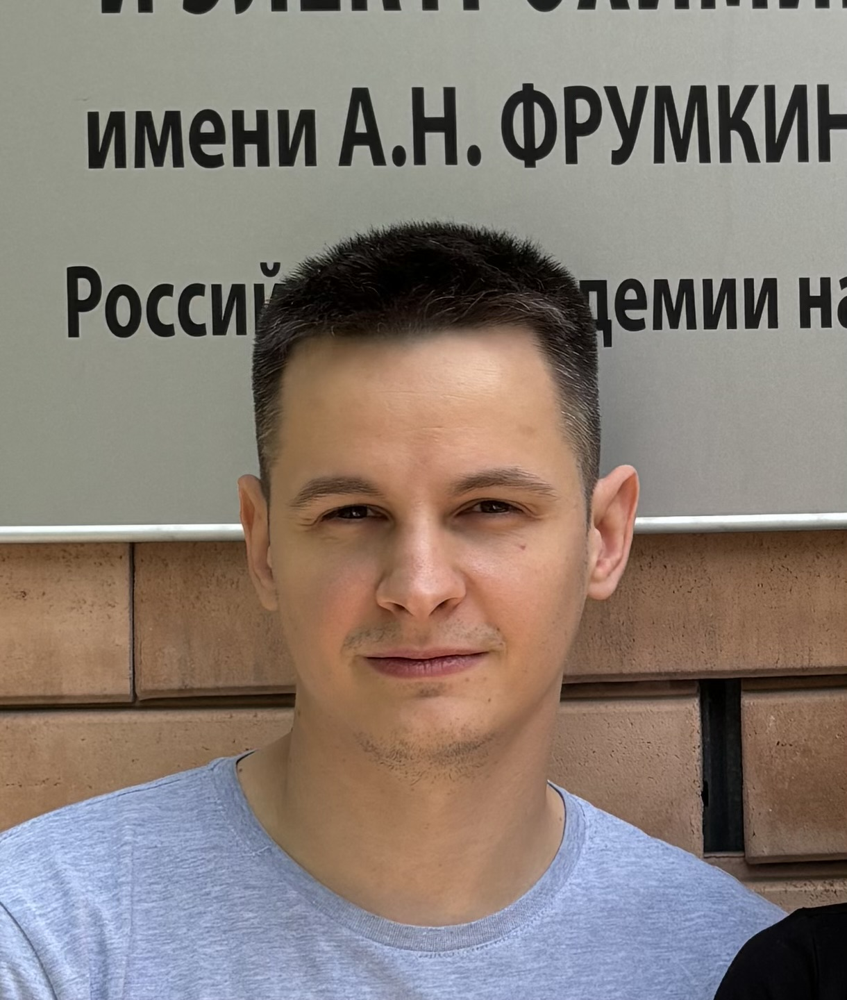

Беляев Евгений Семенович
Генеральный директор, к.х.н.
Старший научный сотрудник лаборатории новых физико-химических проблем Института физической химии и электрохимии им. А.Н. Фрумкина РАН (ИФХЭ РАН).
Тема кандидатской диссертации: «Феофорбиды а и d в синтезе производных природных хлоринов с расширенной π-системой».
Цифровые идентификаторы:
IstinaResearcherID (IRID): 87205414
ResearcherID: O-2266-2017
Scopus: 55999445800
ORCID: 0000-0003-3705-7038
РИНЦ (SPIN-код): 8442-3673
Публикации:
-
Antiviral activity spectrum of phenoxazine nucleoside derivatives
Kozlovskaya L.I., Graciela A., Orlov A.A., Khvatov E.V., Koruchekov A.A., Belyaev E.S., Nikolaev E.N., Korshun V.A., Snoeck R., Osolodkin D.I., Matyugina E.S., Aralov A.V.
Antiviral Research, 2019, 163, 117-124.
DOI: 10.1016/j.antiviral.2019.01.010 (Q1)
-
On the chemical processes accompanying silver reduction from solutions of its salts in organic media
Senchikhin I.N., Zhavoronok E.S., Uryupina O.Ya, Shabatin A.V., Khasanova R.R., Belyaev E.S., Roldughin V.I.
Colloid Journal, 2018, 80, 5, 550-555.
DOI: 10.1134/S1061933X18050150 (Q3)
-
i-Clamp phenoxazine for the fine tuning of DNA i-motif stability
Tsvetkov V.B., Zatsepin T.S., Belyaev E.S., Kostyukevich Y.I., Shpakovski G.V., Podgorsky V.V., Pozmogova G.E., Varizhuk A.M., Aralov A.V.
Nucleic Acids Research, 2018, 46, 6, 2751-2764.
DOI: 10.1093/nar/gky121 (Q1)
-
A Study of the Reaction between Methylpyropheophorbide a and Hydrazine Hydrate
Lonin I.S., Belyaev E.S., Tsivadze A.Yu., Ponomarev G.V., Lonina N.N., Fitch A.N., Chernyshev V.V.
Macroheterocycles, 2017, 10, 4-5, 474-479.
DOI: 10.6060/mhc170832l (Q3)
-
Synthesis of Oligonucleotides Containing Novel G-clamp Analog with C8-Tethered Group in Phenoxazine Ring: Implication to qPCR Detection of the Low-Copy Kemerovo Virus dsRNA
Varizhuk A.M., Zatsepin T.S., Golovin A.V., Belyaev E.S., Kostyukevich Y.I., Dedkov V.G., Shipulin G.A., Shpakovski G.V., Aralov A.V.
Bioorganic and Medicinal Chemistry, 2017, 25, 14, 3597-3605.
DOI: 10.1016/j.bmc.2017.03.062 (Q1)
-
X-Ray Single-Crystal Structures and NMR Characterization of Three Vinyl Substituted Methylpyropheophorbide a Derivatives
Lonin I.S., Belyaev E.S., Tafeenko V.A., Chernyshev V.V., Savinkina E.V., Ponomarev G.V., Koifman O.I., Tsivadze A.Yu.
Macroheterocycles, 2015, 8, 4, 366-370.
DOI: 10.6060/mhc150457l (Q4)
-
3-(2-Bromovinyl)chlorins: a new approach towards chlorophyll a modification
Lonin I.S., Kuzovlev A.S., Belyaev E.S., Ponomarev G.V., Koifman O.I., Tsivadze A.Yu.
Journal of Porphyrins and Phthalocyanines, 2014, 18, 1-2, 123-128.
DOI: 10.1142/S108842461350123X (Q2)
Автор 30 научных публикаций связанных с тематикой ФДТ, а также посвященных синтезу биологически активных веществ и изучению их свойств.
Из них 16 статей в журналах Q1, 5 статей в журналах Q2, 3 статьи в журналах Q3 и 6 статей в журналах Q4.
15 докладов на всероссийских конференциях и конференциях с международным участием. 2 патента.